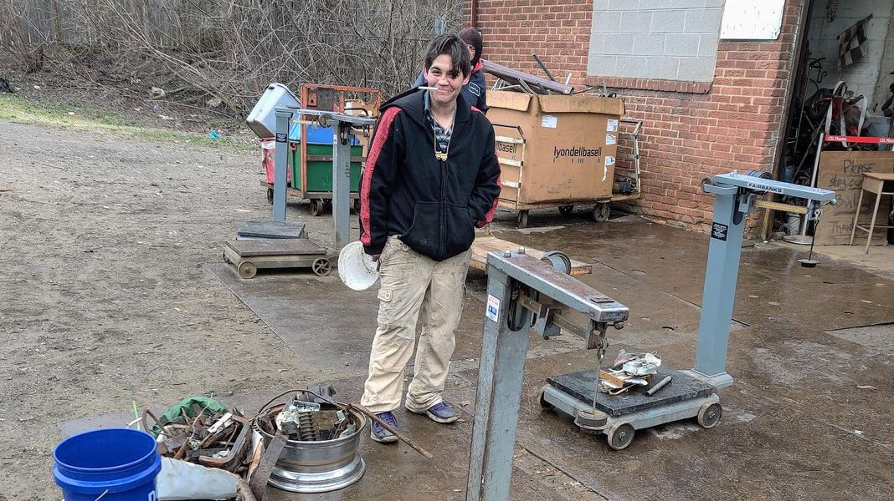

Timeline photos
Here’s a cool picture I got of Ashley Murphy at Jeff’s scrapyard. I took this in March of 2022.
I just heard on Facebook that Ashley went to Toledo and put herself in a rehab center.
I am really bothered by the mean, judgmental attitude of so many people towards addicted people.
A major motivation to not stop drinking for me was these jerks. I often thought I would rather be dead than have to share the same space rock as these asshats. Self hatred and seething rage were major driving factors to drink myself into oblivion. These people just made it worse.
But eventually I just got tired of drinking. It wasn’t interesting any more. And I was so exhausted from increasingly intense hangovers.
The homeless, addicted life is exhausting. It takes decades off your life. Freezing cold, jail, constantly getting your stuff stolen. Some of the friendships are good. And there are fun and exciting times. But overall, I think it gets old after a while.
I think this is probably Ashley’s time to move on. She is a hard worker. She doesn’t have severe mental illness. I think she’s going to do great.
Good luck, Ashley! I can’t wait to hear about where you are headed next.